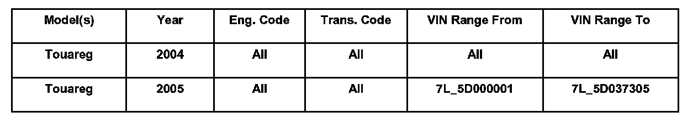
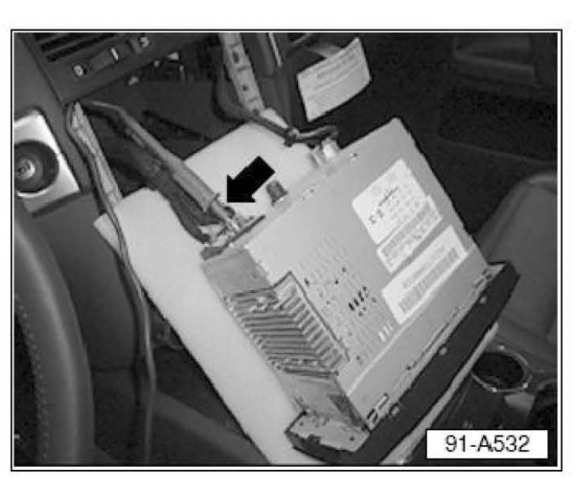
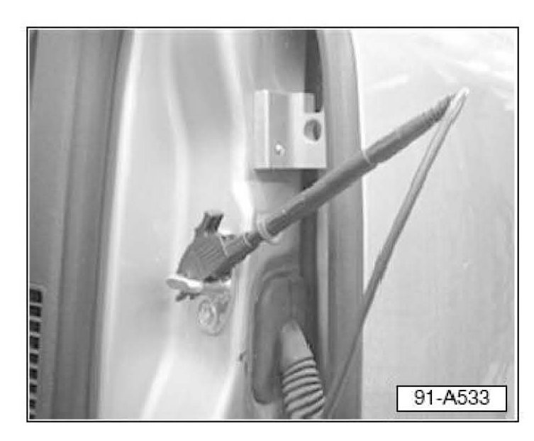
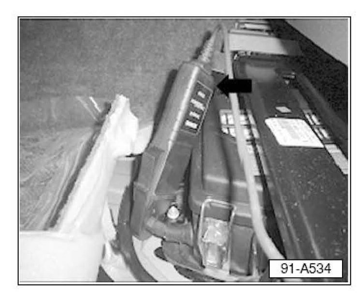
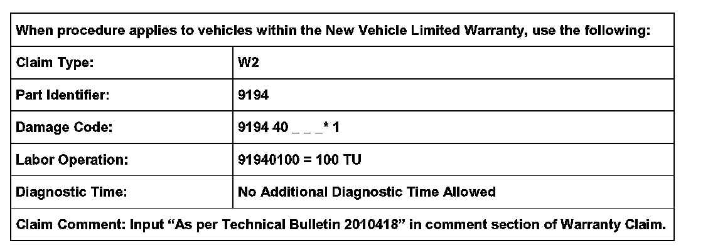
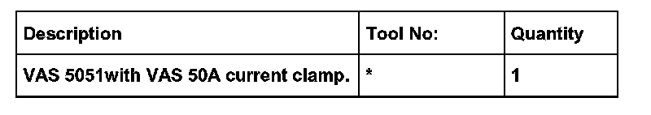

Instruments - Compass Module Discharges Battery
91 07 03Mar. 22, 2007
2010418
Supersedes T.B. Group 91 number 05-03 dated Aug. 16, 2005 due to inclusion into ElsaWeb.

Vehicles Affected
Condition
Module, Vehicle Position Recognition Control -J603-, Diagnosis
Technical Background
Load intervention faults, Terminal 30 faults, discharged battery.
Production Solution
No production change required.
Service
The following procedures will help diagnose possible amperage draw from Vehicle Position Recognition Control module -J603- (compass module).
Module Verification
- Using the VAS 5051, enter Address word 1C.
Observe software level. If already at 2200:
- DO NOT complete this Technical Bulletin, further diagnosis is required.
If software level is less than 2200, (i.e. 1600 or 1700):
- Continue with bulletin.
Vehicle Requirements
Battery must have minimum of 12.5 V no load charge.
If battery is discharged:
- Charge with an approved VW battery charger (InCharge 940 Battery Charging Station) until 12.5 V no load charge is reached.
- Switch all consumers OFF.
- Eject and remove Navigation CD if equipped.
- Disable any auxiliary after market consumers built into the vehicle. I.E. DVD player, 12V converter/chargers, aux. heater, etc.
- Wait for 15 minutes before beginning measurement.
Tip:
When removing the Radio/Navigation unit, place appropriate protective covering on the center console trim to prevent damage.
Battery, Parasitic Current Draw Measuring

Note:
When performing the following step, it is acceptable to "Trip" the drivers side door latch so the VAS 5051 tester probe is not damaged.
- Close all doors, hood and tailgate. Trip driver side door latch only.
- Remove Radio (optional Navigation).
- Connect the VAS Voltage test positive probe (arrow) to the CAN Low terminal, Pin 10 - Orange/Brown wire.

- Connect the VAS 5051 Voltage test negative probe to the door striker.
- Lock the vehicle using the remote.

- Connect VAS 5051 50A current clamp (arrow) on the Negative battery cable in front of the driver seat.
- Monitor the current draw and CAN sleep mode voltage for 15 minutes.
- After 15 minutes the draw should stabilize to a maximum of 40 mA and the CAN sleep voltage to battery voltage.
Tip:
Due to the frequent peak changes it is necessary to re-calibrate the VAS current clamp before final evaluation (disconnect the clamp and push the "Calibrate" button on the VAS 5051 tester).
If parasitic current draw reduces to 40 mA or less:
If complaint occurred more than once:
- Call the Volkswagen Technicians Helpline for further instructions.
If this is a first time concern, and you are unable to duplicate complaint:
- No further action with Vehicle Position Recognition Control module -J603- necessary (other diagnosis is required).
If parasitic current draw does not reduce to 40 mA or less:
A. Intermittent Infotainment CAN BUS wake up with the following symptoms:
^ Intermittent little 'clicks' coming from Instrument cluster area.
^ Intermittent current spikes up to 3.5A.
^ Infotainment CAN Low voltage <5V.
B. Excessive current draw with following symptoms:
No CAN wake up.
Current draw up to 200mA.
If 40 mA or less reading is not obtained at all, or if it is reached only temporarily and continues to mimic scenario 'A' within a 30 minute period:
- Disconnect Vehicle Position Recognition Control module -J603-, calibrate VAS probe, cycle the ignition, and re-measure current draw.
If 40 mA or less reading is obtained after disconnecting Vehicle Position Recognition Control module -J603- and remains stabilized:
- Replace Vehicle Position Recognition Control module -J603- with Part No: 7L6 919 879A.
If 40 mA or less stabile reading is not obtained after Vehicle Position Recognition Control module -J603- is disconnected:
- Further diagnosis is necessary.
Warranty
- Attach VAS 5051 measurement print outs as displayed, with short fault description, to each replaced Vehicle Position Recognition Control module -J603- and provide with old part to VWoA Warranty Test Center.

* Code per warranty vendor code policy.

Required Parts and Tools